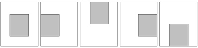
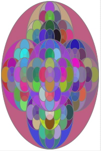
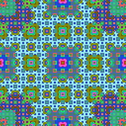

Expect exercises like these on the quiz. There will be a help session covering these exercises on Wednesday at 10:00am in Wilson 214. You will benefit most by doing the exercises before you look at the solutions or attend the Wednesday help session when they will be discussed.
Directions: Study the following recursive methods and answer the questions that follow. Do these practice exercises on paper. Do not type them into a computer. You'll learn more doing them by hand.
int factorial(int n) {
if (n <= 1)
return 1;
else
return (n * factorial(n-1));
}
int sum1toN(int n) {
if (n < 1)
return 0;
else
return (n + sum1toN(n-1));
}
int add(int i, int j) { // assumes i >= 0
if (i == 0)
return j;
else
return add(i-1, j+1);
}
int fib(int n) { // assumes n >= 0
if (n <= 1)
return n;
else
return (fib(n-1) + fib(n-2));
}
factorial(5).
For this same computation, draw the execution stack as it would
look just before returning from factorial(1),
the last recursive call.
sum1toN(5).
Using the data flow model, show all the
recursive calls and final result in the execution of
add(5,9).
For this same computation, draw the execution stack as it would
look just before returning from add(0,14),
the last recursive call.
fib(5). (Try to do this without looking at the lecture notes.)
Open the provided files Recursion.java and RecursionTest.java in Eclipse. For each of the following specifications,
sumDownBy2
with the following specification.
PARAMETERS: an integer n
RETURN VALUE: the sum of the positive integers n + (n-2) + (n-4) + ...
EXAMPLES: sumDownBy2(7) is 7+5+3+1 = 16
sumDownBy2(8) is 8+6+4+2 = 20
sumDownBy2(0) is 0
sumDownBy2(-1) is 0
harmonicSum
with the following specification.
PARAMETERS: a positive integer, n RETURN VALUE: the sum 1 + 1/2 + 1/3 + ... + 1/(n-1) + 1/n
geometricSum
with the following specification.
PARAMETERS: a non-negative integer, k RETURN VALUE: the sum 1 + 1/2 + 1/4 + 1/8 + ... + 1/Math.pow(2,k)
mult with the following specification
without using the multiplication operator. Write a recursive
method that performs the multiplication by repeated addition.
Make your method work for both positive and negative integers, as well
as zero. Start by calling a separate helper method that assumes both parameters are non-negative. Then, in the calling method, make an adjustment afterwards for the case when the signs of the two original numbers were different.
PARAMETERS: integers j and k RETURN VALUE: the product j*k
expt
with the following specification. Use repeated multiplication.
(Do not use the built-in exponentiation method.)
PARAMETERS: integers n and k, where k >= 0
RETURN VALUE: the value of n to the power k
EXAMPLES: expt(3,2) is 9
expt(5,0) is 1
expt(2,5) is 32
Hint: rewrite n^k as n * n^(k-1)
lcm with the following specification.
PARAMETERS: positive integers j and k
RETURN VALUE: the least common multiple (LCM) of j and k
EXAMPLES: lcm(3,5) is 15
lcm(6,8) is 24
Hint: Write a helper method with an extra parameter.
If j >= k,
start the extra parameter at j and keep adding j to it at each recursive
call until you reach a value divisible by k.
Think about how you can be assured this will terminate.
PARAMETERS: a loan amount (principal) in dollars
an annual interest rate
a monthly payment
RETURN VALUE: the number of months until the loan is paid off,
assuming that the interest is compounded monthly
EXAMPLES: loanLength(1000, 0.10, 200) is 6 months
loanLength(1000, 0.10, 1050) is 1 month
loanLength(0, 0.90, 50) is 0 months
In the last month, the payment may be less than the monthly payment
amount. So, think of the loan as being paid off when principal is 0 or
less.
Month 0: $1000 Month 1: $758 Month 2: $515 Month 3: $269 Month 4: $21
The drawLine method should draw a solid line. The drawDashedLine method should draw a segmented (dashed) line, where the lengths of the solid parts and the spaces are approximately equal to the parameter that is passed in. You don't need to be exact, but at least stay within a factor of 2 of the parameter value. Boh methods must be recursive.
To test, run the LineTool.java file as an application. Use the mouse to draw a line in the panel (press to start the line and release to end the line). After you let go, you'll see your the result of your method in the place of the line you drew with the mouse. If you check the "dashed" box, your drawDashedLine method will be called. The parameter value for the dash length is set by the slider, from 0 to 100 pixels. Values at the low end of the range will be more pleasing.
During testing, after you've drawn several lines, you may want to clear away the clutter by selecting the "clear" method from the YOPS method menu.
If panel is the name of your GraphicsPanel parameter, you
can add an ellipse to the panel with the statement panel.add(new
Ellipse(x, y, width, height, color, true);
where
(x,y) is the upper left left corner of the bounding box
around the ellipse, the next two parameters are the width and height
of the ellipse, the color is the desired color of the ellipse, and
the last parameter (true) indicates that the ellipse should be
filled. (The "bounding box" of a shape is the smallest rectangle that
will fit around that shape.)
Your initial call to the recursive helper method will create the largest ellipse, using the dimensions of the entire graphics panel. In other words, you can use (0,0) as the upper left corner and you can use the GraphicsPanel's getWidth() and getHeight() to determine the size of the region for the initial call. After creating the ellipse for the given region, your helper method should make five recursive calls, each for smaller regions within the bounding box of the ellipse you created. The area for the region of each recursive call should be 1/4 of the total area of the bounding box, so we'll call them quadrants. For one region, use a quadrant at the center of the bounding box. For the other four regions, use quadrants whose outside edges are centered along each edge of the bounding box, as shown in the five diagrams below. (Note that the five regions will overlap to create the "flower" effect.) The recursive method shouldn't do anything if the size of the region is too small (say, 10 pixels or less in width or height).
You may find that your image is rather dark. This is because shapes are added front to back on the panel, so your largest ellipse is on top. Try reordering the statements in your recursive method so that you add the ellipse to the panel after making the five recursive calls. Then the largest ellipse will be at the back.

|  |  |
| Recursive "Flower" | Persian Recursion |
The provided ColorPalette class will be used to keep track of the different colors for your rug. When you create an instance of a ColorPalette, you will pass to the constructor the desired number of colors. (A number between 10 and 50 is reasonable.) To choose the next color to use at each recursive call, use the indexOfColor and colorAtIndex methods of the ColorPalette class. More specifically, you should first use the getPixelColor(x,y) method of the Image to find the colors at each of the four corners of the quadrant you are subdividing. Then use the getIndexOfColor method of your ColorPalette object to get the color numbers that correspond to each of those four colors. So, you'll have four integers, one for each corner. Invent a function that combines those integers to produce another color number. For example, you might add the four numbers, then add some other constant, like 5, and then multiply the whole thing by some other number, like 247. To make sure that you have a color number in the right range, mod (%) the result by the number of colors you are using in your color palette. Recall that the a % b computes the remainder of a divided by b, so in the end you'll have a color number that is in the right range (0 to n-1), with n being the number of colors. When you paint the image, you'll need the Color object that corresponds to the color number you computed. You can get this by calling the colorAtIndex method of the ColorPalette object.
The particular function you invent is somewhat arbitrary, but different functions will result in different rug designs. To avoid "ugly" designs, you do want to ensure that (1) the function is symmetric... that is, if you swap the colors at any two corners, your function should still compute the same number, and (2) if the corner colors all happen to be the same (which will be the case at the beginning) then your function shouldn't return that same color back, or else you'll get stuck at that one color.
Once your implementation is working, try creating a rug with more detail by increasing the size of the YOPS image panels given in the parameters to the constructor in main. Use a power of 2. For example, you might try a 512 by 512 rug.)
Footnote: This idea comes from the article "Persian Recursion" by Anne M. Burns that appeared on pages 196-199 of Mathematics Magazine, volume 7, in 1997. It was brought to my attention by Professor Ron Cytron.